EBDP
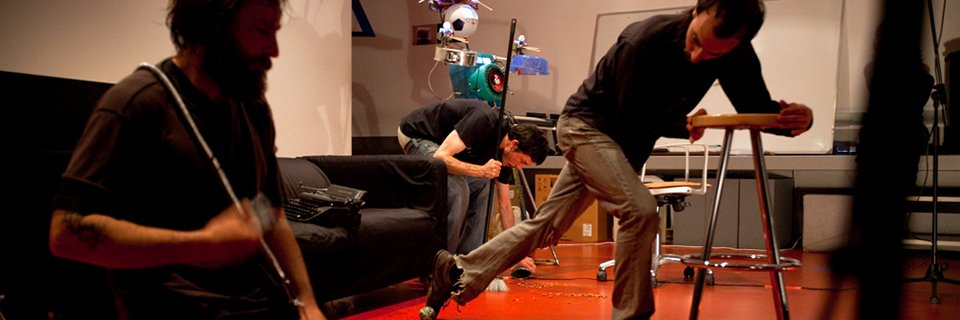
En Busca Del Pasto (EBDP) nació en 2003 como un proyecto de estricta improvisación musical e investigación sonora, que ha ido poniendo el acento cada vez más sobre la dimensión escénica y performativa de la música como “tiempo real” y como fenómeno colectivo. A día de hoy EBDP cuenta con un registro discográfico de más de 50 álbumes publicados en Internet bajo licencias copy left, pero aún así lo más importante está en los directos, en los que no debemos preguntarnos solamente “¿Qué es lo que suena?”, sino también “¿Qué está sucediendo aquí?”.
EBDP no sólo trabaja con la música, sino también con la escenografía, las poses, las posibilidades de experimentación en vivo, de expectación o de participación del público..., jugando con las condiciones en las que tendrá lugar cada vez la improvisación. ¡Nada es superfluo! Y esto es lo fundamental: siendo un evento estrictamente improvisado, lo que al final suceda allí nadie lo sabe.
BITÁCORA
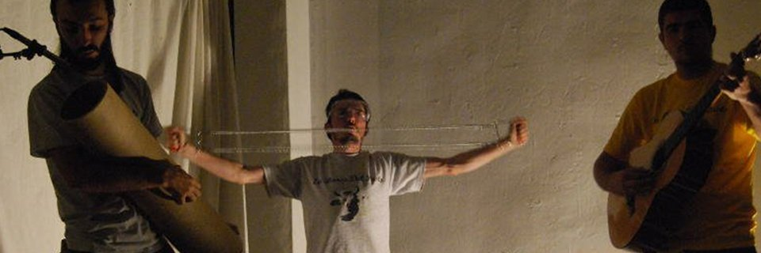
2022
· Nov/22 · HIERBA ENTRE LOS ADOQUINES - Semifinalista en el Prage Underground FIlm Fest.
· Nov/22 · HIERBA ENTRE LOS ADOQUINES - Selección oficial en el XVIII Festival Transterritorial de Cine Underground (Buenos Aires).
· Oct/22 · HIERBA ENTRE LOS ADOQUINES - Semifinalista en el Peloponnisos International documentary Festival (Kalamata, Grecia).
· Sep/22 · Actuación de Jorge Ruiz Abánades en el Encuentro Europeo de Improvisacón - Danza y Música (Niza)
· Sep/22 · HIERBA ENTRE LOS ADOQUINES - Presentación en el Encuentro Europeo de Improvisacón - Danza y Música (Niza)
· Sep/22 · HIERBA ENTRE LOS ADOQUINES - Semifinalista en el Kansas Arthouse Music and Film Festival.
· May/22 · HIERBA ENTRE LOS ADOQUINES - Nominada a Mejor Documental en el Portland New Alternative Voices.
· May/22 · HIERBA ENTRE LOS ADOQUINES - Semifinalista en el New Filmmakers New Orleans.
· Mar/22 · HIERBA ENTRE LOS ADOQUINES - Selección oficial en el International World Film Awards (Nueva York).
· Feb/22 · HIERBA ENTRE LOS ADOQUINES - Selección oficial en el International Documentary Film Awards (Amsterdam).
· Ene/22 · HIERBA ENTRE LOS ADOQUINES - Selección oficial en el Best Documentary Award (Londres).
2021
· Nov/21 · HIERBA ENTRE LOS ADOQUINES - Nominada a Mejor Documental en el Rome Independent Prisma Awards
· Nov/21 · HIERBA ENTRE LOS ADOQUINES - Semifinalista en el Toronto Independent Festival of CIFT
2019-2021
· Planificación, rodaje y realización de la película-documental HIERBA ENTRE LOS ADOQUINES.
2019
· Oct/27 · Festival PERIFERIAS 20.0. CC Manuel Benito Moliner (Huesca).
· Sep/28 · Festival ZARATA 2019. Círculo de Bellas Artes (Madrid).
2018
· Jun/16 · EBDP 15º Aniversario. Observatorio Musical (Madrid).
2017
· Abr/22 · Festival RARAS MÚSICAS #2017. Nadir Gallery (Madrid).
2016
· Jun/04 · 1er Maratón RARAS MÚSICAS. Lanau - Minima Espacio Escénico (Madrid).
2015
· Oct/18 · RARAS MÚSICAS #047. Teatro La Puerta Estrecha (Madrid).
· May/02 · Taller de improvisación músico-escénica. Centro Creativo Quinta del Sordo (Madrid).
· Ene/21 · Le Plan B (Poitiers, Francia).
2014
· Oct/18 · RARAS MÚSICAS #030. Espacio en Blanco (Madrid).
· Sep/25 · Encuentro de Improvisadores. Taberna Alabanda (Madrid).
· May/10 · I Festival Castizo Underground. La Casa de los Jacintos (Madrid).
· Mar/12 · Taberna Alabanda (Madrid).
. Ene/31 · Presentación de INTACT Project. Liu-Multiple/Planetario del Space Mendés-France (Poitiers).
· Ene/22 · Presentación de POLIZONE (INTACT Project). MediaLab-Prado (Madrid).
2013
· Nov/14 · Con Zan Hoffman. Taberna Alabanda (Madrid).
· Oct/27 · Taberna Alabanda (Madrid).
· Sep/29 · Encuentro de Improvisadores. Taberna Alabanda (Madrid).
· Jul/18 · Presentación de OVERFLOW (INTACT Project). MediaLab-Prado (Madrid).
· Feb/09 · Homenaje a José Val del Omar. Sala El Círculo (Cuenca).
· Ene/12 · Concierto ALINA. Con Trío Antimanierista. Taberna Alabanda (Madrid).
2012
· Jun/01 · CICLO DE MÚSICA IMPREVISTA #6. Taberna Alabanda (Madrid).
· May/04 · CICLO DE MÚSICA IMPREVISTA #5. La Tirana Malas Artes (Madrid).
· Mar/02 · CICLO DE MÚSICA IMPREVISTA #4.2. Con The Rebel Octopus. El Caldero de Cobre (Madrid).
· Mar/01 · CICLO DE MÚSICA IMPREVISTA #4.1. Taberna Alabanda (Madrid).
· Feb/03 · CICLO DE MÚSICA IMPREVISTA #3.2. Taberna Alabanda (Madrid).
· Feb/02 · CICLO DE MÚSICA IMPREVISTA #3.1. Taberna Alabanda (Madrid).
2011
· Dic/02 · CICLO DE MÚSICA IMPREVISTA #2.2. La Tirana Malas Artes (Madrid).
· Nov/04 · CICLO DE MÚSICA IMPREVISTA #1.2. Taberna Alabanda (Madrid).
· Nov/03 · CICLO DE MÚSICA IMPREVISTA #1.1. La Faena II (Madrid).
· May/12 · Conciertos Mínimos. Studio Banana (Madrid).
· Abr/05 · "No Works Pop Machine". Los Martes Experimentales (Colectivo Priovra). Pepa Trencha (Madrid).
· Mar/04 · Festival REC-Madrid. Sala Siroco (Madrid).
2010
· Dic/11 · Homenaje a Andréi Tarkovsky. Sala Magatzems Wall&Video (Valencia).
· May/30 · "Pasto al despiece". ARTe SONoro OFF (InSonora+Casa Encendida). Aula 11 (Madrid).
· Abr/17 · AvLab - Sound It Yourself. MediaLab-Prado (Madrid).
· Ene/16 · Con NanTx. La Casa de los Jacintos (Madrid).
2009
· Nov/11 · Sala Magatzems Wall&Video (Valencia).
· Nov/05 · Presentación de “Microvoyages” (Esther Ruiz). Auditorio de Galicia (Santiago de Compostela).
· Nov/01 · Con Zan Hoffman y Minuit de Lacroix. La Casa de los Jacintos (Madrid).
· Abr/25 · Muestra de Confusion Group. Escuela de Baile Teatro Calderón (Madrid).
2008
· Nov/30 · Presentación del Netlabel Draining Beats on the Brain. Sala Básico (Madrid).
· Nov/29 · Con Zan Hoffman. La Casa de los Jacintos (Madrid).
· Nov/28 · Festival ULTERIOR. 14-30 Espacio Joven (Madrid).
· Nov/20 · NetLeft Label Vol. I. Plataforma Intersónica (Madrid).
· Sep/14 · InSonora IV. Instituto Europeo de Diseño (Madrid).
· Jun/13 · Presentación de SALAMI. Escuela Arte 10 (Madrid).
· Abr/28 · "Taller de Expresión Espontanea". XLIV Congreso de Jóvenes Filósofos. Universidad de Granada.
· Mar/01 · Ciclo ATENEO ABIERTO. Auditorio del Ateneo de Madrid.
2007
· Oct/26 · "Pasto al desnudo". La Casa de los Jacintos (Madrid).
· Jul/07 · Festival MIRADOR 07. Matadero-Madrid/Intermediae (Madrid).
· Jun/29 · Casa de los Jacintos (Madrid).
· Jun/21 · Café La Palma (Madrid).
· Jun/08 · Arteria Gráfica (Madrid).
· May/25 · I Concurso Audiovisual de La Casa de los Jacintos. La Casa de los Jacintos (Madrid).
· May/22 · "Restrospectiva II". Paraninfo Facultad Filosofia UCM (Madrid).
· May/18 · Día Internacional de los Museos. Biblioteca Nacional (Madrid).
· Abr/27 · "Oraciones". La Casa de los Jacintos (Madrid).
· Abr/13 · "Anatomía de la intimidad". XLIV Congreso de Jóvenes Filósofos. La escalera de Jacob (Madrid).
· Abr/06 · CUE-Berlin. Weissenseer Freitag (Berlín).
· Mar/30 · "Retrospectiva I". La Casa de los Jacintos (Madrid).
· Feb/23 · "Silencios II: Cielo, mar, playa". La Casa de los Jacintos (Madrid).
· Ene/26 · "Digresiones IV: Variaciones de un diaporama". La Casa de los Jacintos (Madrid).
· Ene/13 · "Este lugar". AvLab. MediaLab-Conde Duque (Madrid).
2006
· Dic/29 · "Silencios I: Habitación vacía". La Casa de los Jacintos (Madrid).
· Nov/24 · La Casa de los Jacintos (Madrid).
· Nov/04 · Teatro Artépolis (Madrid).
· Abr/22 · La Casa de los Jacintos (Madrid).
· Abr/12 · Sala L'Ost (Berlín).
· Feb/26 · La Casa de los Jacintos (Madrid).
2005
· Jul/25 · Finca La Cerca del Trigo (Cercedilla).
· Jun/25 · Finca El Rancho (El Boalo).
· May/05 · Teatro Artépolis (Madrid).
· Abr/22 · Teatro Artépolis (Madrid).
2004
· Dic/03 · Sala El Juglar (Madrid).
· Jun/25 · Barrio de Canillejas (Madrid).
· Jun/22 · Sala El Juglar (Madrid).
· Mar/31 · Fiesta de la Primavera. Facultad de Bellas Artes UCM (Madrid).
· Ene/18 · Primer concierto al público de EBDP. La Casa de los Jacintos (Madrid).
ARCHIVO

DISCOGRAFÍA
EBDP entiende la improvisación como experimentación, y la experimentación como improvisación. No hay unos ensayos previos sobre los que luego se trabaje para crear "obras"; a EBDP le interesa el proceso mismo, la experimentación misma. Bajo las consignas "Nada es superfluo" y "No hay error", EBDP ha intentado grabar y compartir todos sus experimentos, tomando los ensayos como sesiones de grabación, y las sesiones de grabación y los directos como verdaderos ensayos experimentales. Por eso el fondo discográfico de EBDP se acerca hoy a los 60 albums, a los que puedes acceder gratuitamente a través de Jamendo:

VIDEOGRAFÍA
Y dado que la dimensión escénica y performativa de la música es crucial en el trabajo de EBDP, también puedes acceder a varios vídeos con muestras de actuaciones y algún que otro ensayo documental:

CONTACTO

enbuscadelpasto@gmail.com
(+34) 650 056 106 (Jorge)
HIERBA ENTRE LOS ADOQUINES
Un ensayo-documental sobre la libre improvisación en Madrid (2021)
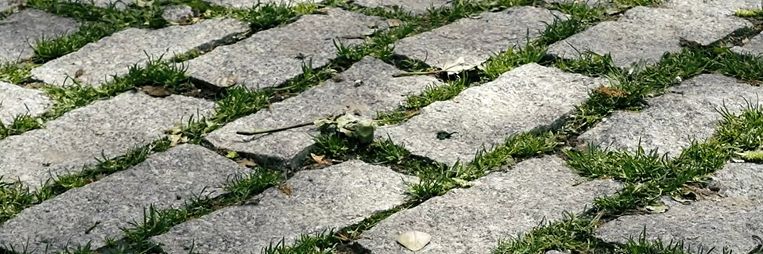
La improvisación libre es quizá el género más experimental y vanguardista de la música contemporánea, y por ello es también el gran desconocido (a pesar de llevar décadas existiendo en Europa, Norte América o Japón, y que seguro hoy tiene representación en una multitud de países alrededor del mundo). Puesto que arranca de un principio de "libre creatividad", este género es además tremendamente diverso, no existiendo límites estéticos o formales, abierto al uso de todo tipo de instrumentos u objetos, abierto a mezclarse con otras disciplinas (como la danza, la performance, el vídeo-arte o la poesía…), y, sobre todo, este es un género donde cada músico explora su propio lenguaje y personalidad, integrando sus propias referencias y experiencias y haciéndolas dialogar con otros músicos.
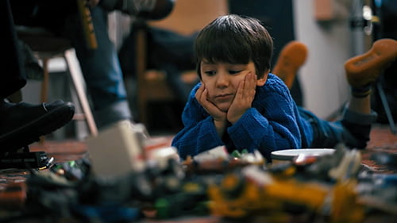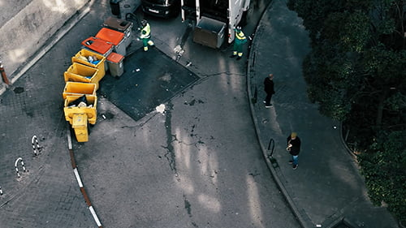 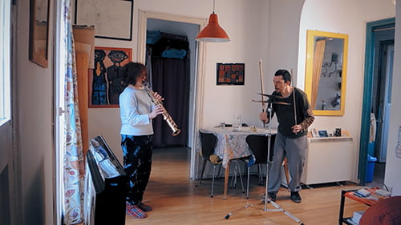
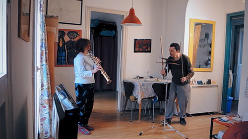

 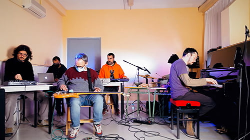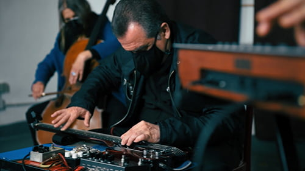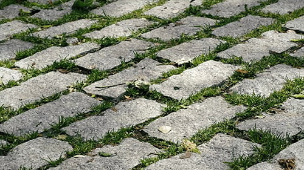
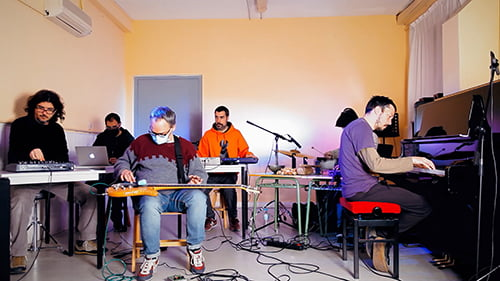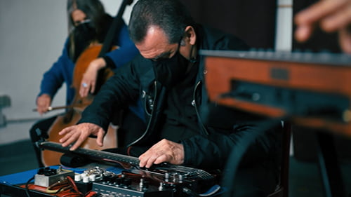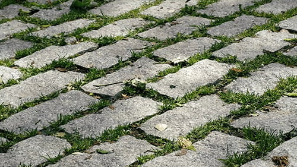
Planeada y liderada por En Busca Del Pasto, esta película, elaborada a modo de ensayo-documental, muestra esa diversidad a través de una treintena de libre-improvisadores afincados en su misma ciudad (Madrid), explorando las líneas vertebrales de esta peculiar práctica: espontaneidad, riesgo y experimentación; resistencia y tolerancia; apertura, diálogo y solidaridad entre ovejas negras. Una música que oscila entre la reflexión estética, la posición política y la dispersión lúdica y terapéutica. Entre lo raro, lo delicado y lo salvaje. Una práctica al margen de los circuitos y mercados oficiales, pero muy viva, muy abierta, muy libre, como la hierba que crece entre los adoquines. Una película sobre música y vida.
Recorrido
· Nov/21 · Semifinalista en el Toronto Independent Festival of CIFT
· Nov/21 · Nominada a Mejor Documental en el Rome Independent Prisma Awards
· Ene/22 · Selección oficial en el Best Documentary Award (Londres).
· Feb/22 · Selección oficial en el International Documentary Film Awards (Amsterdam).
· Mar/22 · Selección oficial en el International World Film Awards (Nueva York).
· May/22 · Semifinalista en el New Filmmakers New Orleans.
· May/22 · Nominada a Mejor Documental en el Portland New Alternative Voices.
· Sep/22 · Semifinalista en el Kansas Arthouse Music and Film Festival.
· Nov/22 · Semifinalista en el Peloponnisos International documentary Festival (Kalamata, Grecia).
· Nov/22 · Selección oficial en el XVIII Festival Transterritorial de Cine Underground (Buenos Aires).
· Nov/22 · Semifinalista en el Prage Underground FIlm Fest.
Créditos
En Busca Del Pasto:
Diego Agulló, Jorge Ruiz, Juan Morales, Pablo Delgado de Torres, Pedro Pons, Ricardo Sanz y Roberto Rodrigo.
Acompañados por (Música / Performance / Voces:
Alba Morín, Antonia Funes, Aramo Olaya, Carlos Costa, Cecilia Gala, Chefa Alonso, Chema Chacón, Ciro Pons, David Area, Diana Bonilla, Diego Perinetti, Duna, Elias Riviere, Elsa Mateu, Ernesto Novales, Gregorio Kazaroff, Héctor Roma, Isabel Corullón, Ivor R. Tamplin, Javier Entonado, Jorge Cabadas, Julián Elvira, Luis Soler, Melisa Medina, "Melón" Jiménez, Paloma Carrasco, Ricardo Tejero, Tomás Gris, Víctor Sequí, Wade Matthews.
Y los miembros de la Orquesta de Improvisación FARMACIA 13:
África Clua, Ana Cuenca, Berta Miranda, Christian Fernández, Eva Frey, Flor Guerin, Francisco Cabeza de Vaca, Héctor Roma, María Prado, Miguel Ángel Barreto y Chefa Alonso (dirección).
Producción: Jorge Ruiz Abánades
Ayudantes de producción: Diego Agulló y Juan Morales
Fotografía: Luis Acaraz
Operadores de cámara: Luis Alcaraz y Jorge Ruiz Abánades
Imágenes de archivo de En Busca Del Pasto: En Busca Del Pasto
Imágenes de archivo de Música Libre y Raras Músicas: Gregorio Kazaroff y Marina Paradela
Imágenes de librería Pixabay.com: Roberto D'Amico
Imágenes de librería Pexels.com Alex Fu, Cottonbro, Egor Kunovsky, Kelly Lacy, Kindel Media y Ni Pen
Películas citadas: "Indiana Jones, En Busca Del Parca Perdida", Steven Spielberg (1981) y "La infancia de Iván", Adrei Tarkovsky (1962)
Máster de Sonido: Valdelamor
Grabación sesión final (Aula de Músicas): Roberto Rodrigo
Técnico en Ágora Sol Radio: César Pradíes
Edición: Jorge Ruiz Abánades
Color y Máster DCP Adrián Aragonés
Concepto y guión: Diego Agulló y Jorge Ruiz Abánades
Ayudante de dirección: Diego Agulló
Dirección: Jorge Ruiz Abánades
---
Agradecimientos:
Ana Fernández-Cid, Ana Mallo, Antonio Sánchez, Arsenio Ruiz, Cota, Edward Readman, Esther Martínez, Eugenio Tardón, Isa, Jaime Espinosa, José Juarros, Juancar Castillo, Juan López Ciudad, Juan Serrano, Kikoto, Laureao Padrón,Natalia Rodríguez García, Santiago Sánchez y Sonia Noya.
---
Proyecto realizado con el apoyo del programa de ayudas a la creación y la movilidad del Ayuntamiento de Madrid (2019).